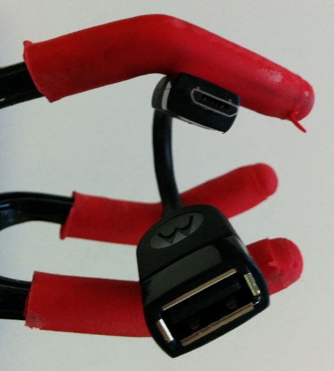
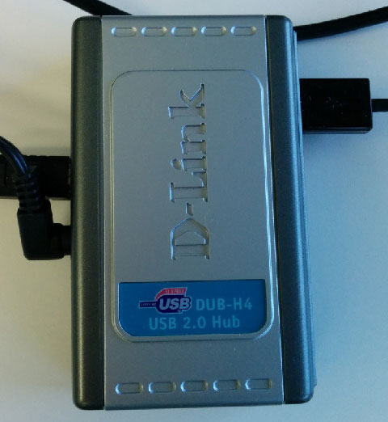
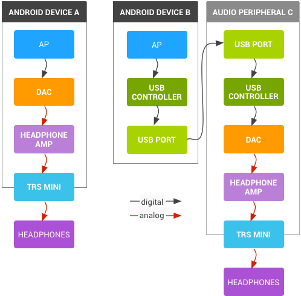

This article reviews Android support for USB digital audio and related USB-based protocols.
Audience
The target audience of this article is Android device OEMs, SoC vendors, USB audio peripheral suppliers, advanced audio application developers, and others seeking detailed understanding of USB digital audio internals on Android.
End users of Nexus devices should see the article Record and play back audio using USB host mode at the Nexus Help Center instead. Though this article is not oriented towards end users, certain audiophile consumers may find portions of interest.
Overview of USB
Universal Serial Bus (USB) is informally described in the Wikipedia article USB, and is formally defined by the standards published by the USB Implementers Forum, Inc. For convenience, we summarize the key USB concepts here, but the standards are the authoritative reference.
Basic concepts and terminology
USB is a bus with a single initiator of data transfer operations, called the host. The host communicates with peripherals via the bus.
Note: The terms device and accessory are common synonyms for peripheral. We avoid those terms here, as they could be confused with Android device or the Android-specific concept called accessory mode.
A critical host role is enumeration: the process of detecting which peripherals are connected to the bus, and querying their properties expressed via descriptors.
A peripheral may be one physical object but actually implement multiple logical functions. For example, a webcam peripheral could have both a camera function and a microphone audio function.
Each peripheral function has an interface that defines the protocol to communicate with that function.
The host communicates with a peripheral over a pipe to an endpoint, a data source or sink provided by one of the peripheral's functions.
There are two kinds of pipes: message and stream. A message pipe is used for bi-directional control and status. A stream pipe is used for uni-directional data transfer.
The host initiates all data transfers, hence the terms input and output are expressed relative to the host. An input operation transfers data from the peripheral to the host, while an output operation transfers data from the host to the peripheral.
There are three major data transfer modes: interrupt, bulk, and isochronous. Isochronous mode will be discussed further in the context of audio.
The peripheral may have terminals that connect to the outside world, beyond the peripheral itself. In this way, the peripheral serves to translate between USB protocol and "real world" signals. The terminals are logical objects of the function.
Android USB modes
Development mode
Development mode has been present since the initial release of Android. The Android device appears as a USB peripheral to a host PC running a desktop operating system such as Linux, Mac OS X, or Windows. The only visible peripheral function is either Android fastboot or Android Debug Bridge (adb). The fastboot and adb protocols are layered over USB bulk data transfer mode.
Host mode
Host mode is introduced in Android 3.1 (API level 12).
As the Android device must act as host, and most Android devices include a micro-USB connector that does not directly permit host operation, an on-the-go (OTG) adapter such as this is usually required:
Figure 1. On-the-go (OTG) adapter
An Android device might not provide sufficient power to operate a particular peripheral, depending on how much power the peripheral needs, and how much the Android device is capable of supplying. Even if adequate power is available, the Android device battery charge may be significantly shortened. For these situations, use a powered hub such as this:
Figure 2. Powered hub
Accessory mode
Accessory mode was introduced in Android 3.1 (API level 12) and back-ported to Android 2.3.4. In this mode, the Android device operates as a USB peripheral, under the control of another device such as a dock that serves as host. The difference between development mode and accessory mode is that additional USB functions are visible to the host, beyond adb. The Android device begins in development mode and then transitions to accessory mode via a re-negotiation process.
Accessory mode was extended with additional features in Android 4.1, in particular audio described below.
USB audio
USB classes
Each peripheral function has an associated device class document that specifies the standard protocol for that function. This enables class compliant hosts and peripheral functions to inter-operate, without detailed knowledge of each other's workings. Class compliance is critical if the host and peripheral are provided by different entities.
The term driverless is a common synonym for class compliant, indicating that it is possible to use the standard features of such a peripheral without requiring an operating-system specific driver to be installed. One can assume that a peripheral advertised as "no driver needed" for major desktop operating systems will be class compliant, though there may be exceptions.
USB audio class
Here we concern ourselves only with peripherals that implement audio functions, and thus adhere to the audio device class. There are two editions of the USB audio class specification: class 1 (UAC1) and 2 (UAC2).
Comparison with other classes
USB includes many other device classes, some of which may be confused with the audio class. The mass storage class (MSC) is used for sector-oriented access to media, while Media Transfer Protocol (MTP) is for full file access to media. Both MSC and MTP may be used for transferring audio files, but only USB audio class is suitable for real-time streaming.
Audio terminals
The terminals of an audio peripheral are typically analog. The analog signal presented at the peripheral's input terminal is converted to digital by an analog-to-digital converter (ADC), and is carried over USB protocol to be consumed by the host. The ADC is a data source for the host. Similarly, the host sends a digital audio signal over USB protocol to the peripheral, where a digital-to-analog converter (DAC) converts and presents to an analog output terminal. The DAC is a sink for the host.
Channels
A peripheral with audio function can include a source terminal, sink terminal, or both. Each direction may have one channel (mono), two channels (stereo), or more. Peripherals with more than two channels are called multichannel. It is common to interpret a stereo stream as consisting of left and right channels, and by extension to interpret a multichannel stream as having spatial locations corresponding to each channel. However, it is also quite appropriate (especially for USB audio more so than HDMI) to not assign any particular standard spatial meaning to each channel. In this case, it is up to the application and user to define how each channel is used. For example, a four-channel USB input stream might have the first three channels attached to various microphones within a room, and the final channel receiving input from an AM radio.
Isochronous transfer mode
USB audio uses isochronous transfer mode for its real-time characteristics, at the expense of error recovery. In isochronous mode, bandwidth is guaranteed, and data transmission errors are detected using a cyclic redundancy check (CRC). But there is no packet acknowledgement or re-transmission in the event of error.
Isochronous transmissions occur each Start Of Frame (SOF) period. The SOF period is one millisecond for full-speed, and 125 microseconds for high-speed. Each full-speed frame carries up to 1023 bytes of payload, and a high-speed frame carries up to 1024 bytes. Putting these together, we calculate the maximum transfer rate as 1,023,000 or 8,192,000 bytes per second. This sets a theoretical upper limit on the combined audio sample rate, channel count, and bit depth. The practical limit is lower.
Within isochronous mode, there are three sub-modes:
- Adaptive
- Asynchronous
- Synchronous
In adaptive sub-mode, the peripheral sink or source adapts to a potentially varying sample rate of the host.
In asynchronous (also called implicit feedback) sub-mode, the sink or source determines the sample rate, and the host accommodates. The primary theoretical advantage of asynchronous sub-mode is that the source or sink USB clock is physically and electrically closer to (and indeed may be the same as, or derived from) the clock that drives the DAC or ADC. This proximity means that asynchronous sub-mode should be less susceptible to clock jitter. In addition, the clock used by the DAC or ADC may be designed for higher accuracy and lower drift than the host clock.
In synchronous sub-mode, a fixed number of bytes is transferred each SOF period. The audio sample rate is effectively derived from the USB clock. Synchronous sub-mode is not commonly used with audio because both host and peripheral are at the mercy of the USB clock.
The table below summarizes the isochronous sub-modes:
| Sub-mode | Byte count per packet |
Sample rate determined by |
Used for audio |
|---|---|---|---|
| adaptive | variable | host | yes |
| asynchronous | variable | peripheral | yes |
| synchronous | fixed | USB clock | no |
In practice, the sub-mode does of course matter, but other factors should also be considered.
Android support for USB audio class
Development mode
USB audio is not supported in development mode.
Host mode
Android 5.0 (API level 21) and above supports a subset of USB audio class 1 (UAC1) features:
- The Android device must act as host
- The audio format must be PCM (interface type I)
- The bit depth must be 16-bits, 24-bits, or 32-bits where 24 bits of useful audio data are left-justified within the most significant bits of the 32-bit word
- The sample rate must be either 48, 44.1, 32, 24, 22.05, 16, 12, 11.025, or 8 kHz
- The channel count must be 1 (mono) or 2 (stereo)
Perusal of the Android framework source code may show additional code beyond the minimum needed to support these features. But this code has not been validated, so more advanced features are not yet claimed.
Accessory mode
Android 4.1 (API level 16) added limited support for audio playback to the host. While in accessory mode, Android automatically routes its audio output to USB. That is, the Android device serves as a data source to the host, for example a dock.
Accessory mode audio has these features:
- The Android device must be controlled by a knowledgeable host that can first transition the Android device from development mode to accessory mode, and then the host must transfer audio data from the appropriate endpoint. Thus the Android device does not appear "driverless" to the host.
- The direction must be input, expressed relative to the host
- The audio format must be 16-bit PCM
- The sample rate must be 44.1 kHz
- The channel count must be 2 (stereo)
Accessory mode audio has not been widely adopted, and is not currently recommended for new designs.
Applications of USB digital audio
As the name indicates, the USB digital audio signal is represented by a digital data stream rather than the analog signal used by the common TRS mini headset connector. Eventually any digital signal must be converted to analog before it can be heard. There are tradeoffs in choosing where to place that conversion.
A tale of two DACs
In the example diagram below, we compare two designs. First we have a mobile device with Application Processor (AP), on-board DAC, amplifier, and analog TRS connector attached to headphones. We also consider a mobile device with USB connected to external USB DAC and amplifier, also with headphones.
Figure 3. Comparison of two DACs
Which design is better? The answer depends on your needs. Each has advantages and disadvantages.
Note: This is an artificial comparison, since a real Android device would probably have both options available.
The first design A is simpler, less expensive, uses less power, and will be a more reliable design assuming otherwise equally reliable components. However, there are usually audio quality tradeoffs vs. other requirements. For example, if this is a mass-market device, it may be designed to fit the needs of the general consumer, not for the audiophile.
In the second design, the external audio peripheral C can be designed for higher audio quality and greater power output without impacting the cost of the basic mass market Android device B. Yes, it is a more expensive design, but the cost is absorbed only by those who want it.
Mobile devices are notorious for having high-density circuit boards, which can result in more opportunities for crosstalk that degrades adjacent analog signals. Digital communication is less susceptible to noise, so moving the DAC from the Android device A to an external circuit board C allows the final analog stages to be physically and electrically isolated from the dense and noisy circuit board, resulting in higher fidelity audio.
On the other hand, the second design is more complex, and with added complexity come more opportunities for things to fail. There is also additional latency from the USB controllers.
Host mode applications
Typical USB host mode audio applications include:
- music listening
- telephony
- instant messaging and voice chat
- recording
For all of these applications, Android detects a compatible USB digital audio peripheral, and automatically routes audio playback and capture appropriately, based on the audio policy rules. Stereo content is played on the first two channels of the peripheral.
There are no APIs specific to USB digital audio. For advanced usage, the automatic routing may interfere with applications that are USB-aware. For such applications, disable automatic routing via the corresponding control in the Media section of Settings / Developer Options.
Debugging while in host mode
While in USB host mode, adb debugging over USB is unavailable. See section Wireless usage of Android Debug Bridge for an alternative.
Implementing USB audio
Recommendations for audio peripheral vendors
In order to inter-operate with Android devices, audio peripheral vendors should:
- design for audio class compliance; currently Android targets class 1, but it is wise to plan for class 2
- avoid quirks
- test for inter-operability with reference and popular Android devices
- clearly document supported features, audio class compliance, power requirements, etc. so that consumers can make informed decisions
Recommendations for Android device OEMs and SoC vendors
In order to support USB digital audio, device OEMs and SoC vendors should:
- design hardware to support USB host mode
- enable generic USB host support at the framework level
via the
android.hardware.usb.host.xmlfeature flag - enable all kernel features needed: USB host mode, USB audio, isochronous transfer mode; see Android Kernel Configuration
- keep up-to-date with recent kernel releases and patches; despite the noble goal of class compliance, there are extant audio peripherals with quirks, and recent kernels have workarounds for such quirks
- enable USB audio policy as described below
- add audio.usb.default to PRODUCT_PACKAGES in device.mk
- test for inter-operability with common USB audio peripherals
How to enable USB audio policy
To enable USB audio, add an entry to the audio policy configuration file. This is typically located here:
device/oem/codename/audio_policy.conf
The pathname component "oem" should be replaced by the name of the OEM who manufactures the Android device, and "codename" should be replaced by the device code name.
An example entry is shown here:
audio_hw_modules {
...
usb {
outputs {
usb_accessory {
sampling_rates 44100
channel_masks AUDIO_CHANNEL_OUT_STEREO
formats AUDIO_FORMAT_PCM_16_BIT
devices AUDIO_DEVICE_OUT_USB_ACCESSORY
}
usb_device {
sampling_rates dynamic
channel_masks dynamic
formats dynamic
devices AUDIO_DEVICE_OUT_USB_DEVICE
}
}
inputs {
usb_device {
sampling_rates dynamic
channel_masks AUDIO_CHANNEL_IN_STEREO
formats AUDIO_FORMAT_PCM_16_BIT
devices AUDIO_DEVICE_IN_USB_DEVICE
}
}
}
...
}
Source code
The audio Hardware Abstraction Layer (HAL) implementation for USB audio is located here:
hardware/libhardware/modules/usbaudio/
The USB audio HAL relies heavily on tinyalsa, described at Audio Terminology. Though USB audio relies on isochronous transfers, this is abstracted away by the ALSA implementation. So the USB audio HAL and tinyalsa do not need to concern themselves with this part of USB protocol.
Testing USB audio
For information on CTS testing for USB audio, see USB Audio CTS Verifier Tests.